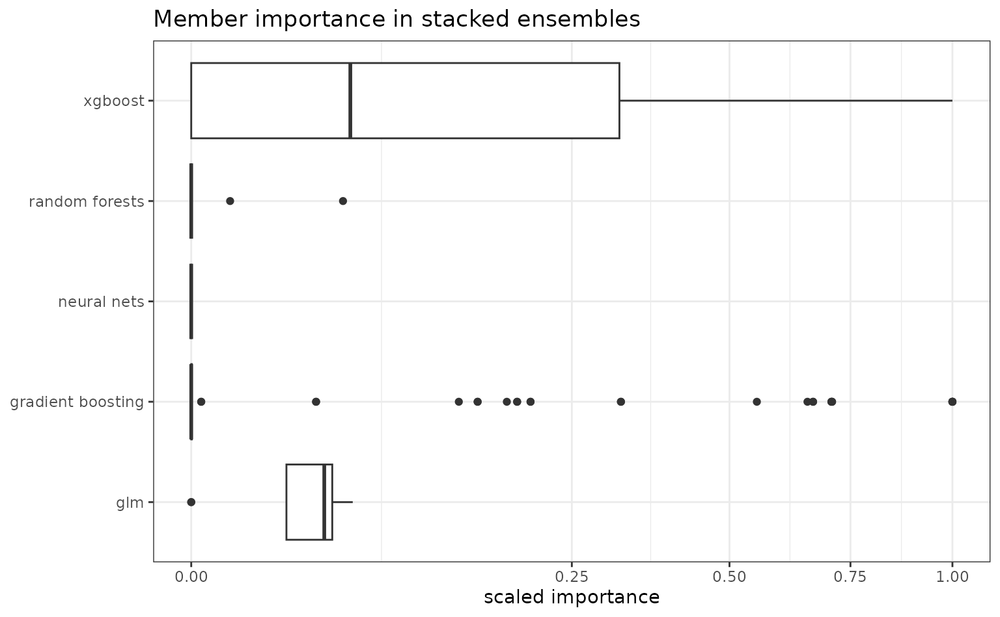
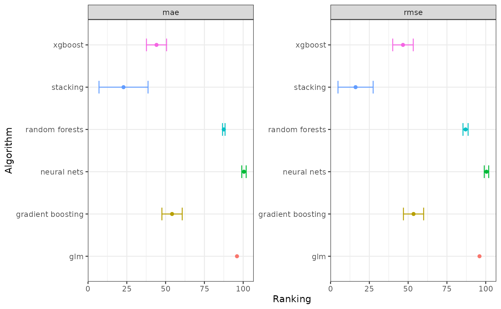

Using H2O AutoML
Automatic machine learning (AutoML) is the process of automatically searching, screening and evaluating many models for a specific dataset. AutoML could be particularly insightful as an exploratory approach to identify model families and parameterization that is most likely to succeed. You can use H2O’s AutoML algorithm via the 'h2o' engine in auto_ml(). agua provides several helper functions to quickly wrangle and visualize AutoML’s results.
Let’s run an AutoML search on the concrete data.
library(tidymodels)
library(agua)
library(ggplot2)
theme_set(theme_bw())
h2o_start()
data(concrete)
set.seed(4595)
concrete_split <- initial_split(concrete, strata = compressive_strength)
concrete_train <- training(concrete_split)
concrete_test <- testing(concrete_split)
# run for a maximum of 120 seconds
auto_spec <-
auto_ml() %>%
set_engine("h2o", max_runtime_secs = 120, seed = 1) %>%
set_mode("regression")
normalized_rec <-
recipe(compressive_strength ~ ., data = concrete_train) %>%
step_normalize(all_predictors())
auto_wflow <-
workflow() %>%
add_model(auto_spec) %>%
add_recipe(normalized_rec)
auto_fit <- fit(auto_wflow, data = concrete_train)
extract_fit_parsnip(auto_fit)
#> parsnip model object
#>
#> ═════════════════════ H2O AutoML Summary: 105 models ═════════════════════
#>
#>
#> ═══════════════════════════════ Leaderboard ══════════════════════════════
#> model_id rmse mse mae
#> 1 StackedEnsemble_BestOfFamily_4_AutoML_1_20220712_204537 4.49 20.1 2.90
#> 2 XGBoost_grid_1_AutoML_1_20220712_204537_model_38 4.61 21.3 3.03
#> 3 StackedEnsemble_AllModels_2_AutoML_1_20220712_204537 4.62 21.4 3.04
#> 4 StackedEnsemble_AllModels_1_AutoML_1_20220712_204537 4.67 21.8 3.08
#> 5 XGBoost_grid_1_AutoML_1_20220712_204537_model_39 4.68 21.9 3.14
#> 6 StackedEnsemble_BestOfFamily_3_AutoML_1_20220712_204537 4.68 21.9 3.08
#> rmsle mean_residual_deviance
#> 1 0.136 20.1
#> 2 0.143 21.3
#> 3 0.140 21.4
#> 4 0.142 21.8
#> 5 0.146 21.9
#> 6 0.142 21.9In 120 seconds, AutoML fitted 105 models. The parsnip fit object extract_fit_parsnip(auto_fit) shows the number of candidate models, the best performing algorithm and its corresponding model id, and a preview of the leaderboard with cross validation performances. The model_id column in the leaderboard is a unique model identifier for the h2o server. This can be useful when you need to predict on or extract a specific model, e.g. with predict(auto_fit, id = id) and extract_fit_engine(auto_fit, id = id). By default, they will operate on the best performing leader model.
# predict with the best model
predict(auto_fit, new_data = concrete_test)
#> # A tibble: 260 × 1
#> .pred
#> <dbl>
#> 1 41.6
#> 2 43.0
#> 3 37.8
#> 4 55.9
#> 5 41.1
#> 6 27.1
#> 7 52.8
#> 8 36.5
#> 9 52.5
#> 10 39.4
#> # … with 250 more rowsTypically, we use AutoML to get a quick sense of the range of our success metric, and algorithms that are likely to succeed. agua provides tools to summarize these results.
-
rank_results()returns the leaderboard in a tidy format with rankings within each metric. A low rank means good performance in a metric. Here, the top 5 models with the smallest MAE includes are four stacked ensembles and one GBM model.
rank_results(auto_fit) %>%
filter(.metric == "mae") %>%
arrange(rank)
#> # A tibble: 105 × 5
#> id algorithm .metric mean rank
#> <chr> <chr> <chr> <dbl> <int>
#> 1 StackedEnsemble_BestOfFamily_4_AutoML_1_… stacking mae 2.91 1
#> 2 XGBoost_grid_1_AutoML_1_20220712_204537_… xgboost mae 3.03 2
#> 3 StackedEnsemble_AllModels_2_AutoML_1_202… stacking mae 3.04 3
#> 4 StackedEnsemble_BestOfFamily_3_AutoML_1_… stacking mae 3.08 4
#> 5 StackedEnsemble_AllModels_1_AutoML_1_202… stacking mae 3.09 5
#> 6 XGBoost_grid_1_AutoML_1_20220712_204537_… xgboost mae 3.13 6
#> 7 XGBoost_grid_1_AutoML_1_20220712_204537_… xgboost mae 3.13 7
#> 8 XGBoost_grid_1_AutoML_1_20220712_204537_… xgboost mae 3.14 8
#> 9 GBM_5_AutoML_1_20220712_204537 gradient… mae 3.15 9
#> 10 StackedEnsemble_BestOfFamily_2_AutoML_1_… stacking mae 3.17 10
#> # … with 95 more rows-
collect_metrics()returns average statistics of performance metrics (summarized) per model, or raw value for each resample (unsummarized).cv_ididentifies the resample h2o internally used for optimization.
collect_metrics(auto_fit, summarize = FALSE)
#> # A tibble: 3,715 × 5
#> id algorithm .metric cv_id .estimate
#> <chr> <chr> <chr> <chr> <dbl>
#> 1 StackedEnsemble_BestOfFamily_4_AutoM… stacking mae cv_1… 2.68
#> 2 StackedEnsemble_BestOfFamily_4_AutoM… stacking mae cv_2… 2.51
#> 3 StackedEnsemble_BestOfFamily_4_AutoM… stacking mae cv_3… 3.09
#> 4 StackedEnsemble_BestOfFamily_4_AutoM… stacking mae cv_4… 3.24
#> 5 StackedEnsemble_BestOfFamily_4_AutoM… stacking mae cv_5… 3.02
#> 6 StackedEnsemble_BestOfFamily_4_AutoM… stacking mean_r… cv_1… 16.2
#> 7 StackedEnsemble_BestOfFamily_4_AutoM… stacking mean_r… cv_2… 17.3
#> 8 StackedEnsemble_BestOfFamily_4_AutoM… stacking mean_r… cv_3… 20.0
#> 9 StackedEnsemble_BestOfFamily_4_AutoM… stacking mean_r… cv_4… 26.5
#> 10 StackedEnsemble_BestOfFamily_4_AutoM… stacking mean_r… cv_5… 20.8
#> # … with 3,705 more rows-
tidy()returns a tibble with performance and individual model objects. This is helpful if you want to perform operations (e.g., predict) across all candidates.
tidy(auto_fit) %>%
mutate(
.predictions = map(.model, predict, new_data = head(concrete_test))
)
#> # A tibble: 105 × 5
#> id algorithm .metric .model .predictions
#> <chr> <chr> <list> <list> <list>
#> 1 StackedEnsemble_BestOfFamily_… stacking <tibble> <fit[+]> <tibble>
#> 2 XGBoost_grid_1_AutoML_1_20220… xgboost <tibble> <fit[+]> <tibble>
#> 3 StackedEnsemble_AllModels_2_A… stacking <tibble> <fit[+]> <tibble>
#> 4 StackedEnsemble_AllModels_1_A… stacking <tibble> <fit[+]> <tibble>
#> 5 XGBoost_grid_1_AutoML_1_20220… xgboost <tibble> <fit[+]> <tibble>
#> 6 StackedEnsemble_BestOfFamily_… stacking <tibble> <fit[+]> <tibble>
#> 7 StackedEnsemble_BestOfFamily_… stacking <tibble> <fit[+]> <tibble>
#> 8 XGBoost_grid_1_AutoML_1_20220… xgboost <tibble> <fit[+]> <tibble>
#> 9 XGBoost_grid_1_AutoML_1_20220… xgboost <tibble> <fit[+]> <tibble>
#> 10 GBM_5_AutoML_1_20220712_204537 gradient… <tibble> <fit[+]> <tibble>
#> # … with 95 more rows-
member_weights()computes member importance for all stacked ensemble models. Aside from base models such as GLM, GBM and neural networks, h2o tries to fit two kinds of stacked ensembles: one combines the all base models ("all") and the other includes only the best model of each kind ("bestofFamily"), specific to a time point. Regardless of how ensembles are formed, we can calculate the variable importance in the ensemble as the importance score of every member model, i.e., the relative contribution of base models in the meta-learner. This is typically the coefficient magnitude in a second-level GLM. This way, in addition to inspecting model performances by themselves, we can find promising candidates if stacking is needed. Here, we show the scaled contribution of different algorithms in stacked ensembles.
auto_fit %>%
extract_fit_parsnip() %>%
member_weights() %>%
unnest(importance) %>%
filter(type == "scaled_importance") %>%
ggplot() +
geom_boxplot(aes(value, algorithm)) +
scale_x_sqrt() +
labs(y = NULL, x = "scaled importance", title = "Member importance in stacked ensembles")
You can also autoplot() an AutoML object, which essentially wraps functions above to plot performance assessment and ranking. The lower the average ranking, the more likely the model type suits the data.

After initial assessment, we might be interested to allow more time for AutoML to search for more candidates. Recall that we have set engine argument max_runtime_secs to 120s before, we can increase it or adjust max_models to control the total runtime. H2O also provides an option to build upon an existing AutoML leaderboard and add more candidates, this can be done via refit(). The model to be re-fitted needs to have engine argument save_data = TRUE. If you also want to add stacked ensembles set keep_cross_validation_predictions = TRUE as well.
# not run
auto_spec_refit <-
auto_ml() %>%
set_engine("h2o",
max_runtime_secs = 300,
save_data = TRUE,
keep_cross_validation_predictions = TRUE) %>%
set_mode("regression")
auto_wflow_refit <-
workflow() %>%
add_model(auto_spec_refit) %>%
add_recipe(normalized_rec)
first_auto <- fit(auto_wflow_refit, data = concrete_train)
# fit another 60 seconds
second_auto <- refit(first_auto, max_runtime_secs = 60)Important engine arguments
There are several relevant engine arguments for H2O AutoML, some of the most commonly used are:
max_runtime_secsandmax_models: Adjust runtime.include_algosandexclude_algos: A character vector naming the algorithms to include or exclude.validation: An integer between 0 and 1 specifying the proportion of training data reserved as validation set. This is used by h2o for performance assessment and potential early stopping.
See the details section in h2o::h2o.automl() for more information.